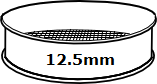
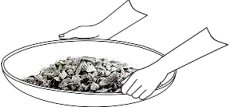
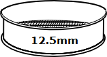
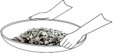
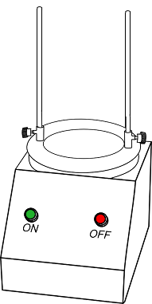
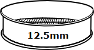
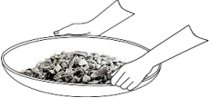

LOS ANGELES ABRASION TEST ON AGGREGATE
Objective:
To determine the abrasion value of coarse aggregate by using Los - Angeles testing machine with an abrasive charge.
Apparatus used:
Los Angeles Abrasion Machine, Abrasive Charges, Sieve Shaker, Trowel, Weighing Machine.

Description Los Angeles Abrasion Test on aggregates: is the measure of aggregate toughness and abrasion resistance such as crushing, degradation and disintegration.
STEP
1
Select the grading to be used in the test such that it conforms to the grading to be used in construction to the maximum extent possible.
| Grading | Weight in gms of each test sample in the size range, mm (Passing and retained on square holes) | Abrasive Charge | ||||||||||
| 80-63 | 63-40 | 50-40 | 40-25 | 25-20 | 20-12.5 | 12.5-10 | 10-6.3 | 6.3-4.75 | 4.75-2.36 | Number of spheres | Weight of charge, gm | |
| A | 1250 | 1250 | 1250 | 1250 | 12 | 5000+/-25 | ||||||
| B | 2500 | 2500 | 12 | 4584+/-25 | ||||||||
| C | 2500 | 2500 | 8 | 3330+/-20 | ||||||||
| D | 5000 | 6 | 2500+/-15 | |||||||||
| E | 2500 | 2500 | 2500 | 12 | 5000+/-25 | |||||||
| F | 5000 | 5000 | 12 | 5000+/-25 | ||||||||
| G | 5000 | 5000 | 12 | 5000+/-25 | ||||||||
Preferred sample for construction:
Grading : B
Weight of sample in gms: 5000
Number of spheres: 12
STEP
2
 




Sieve the sample in a 20mm, 12.5mm and 10mm IS sieve.

